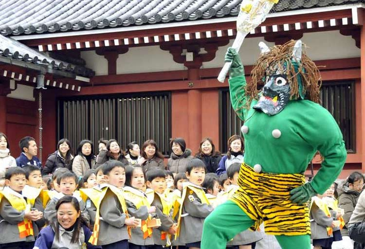

春节进入倒计时，几天后你就能左手拎着行李，右手提着礼物，站在自己家门口，喊一句“妈，我跨越了星辰大海，回来过年啦”！这是一场身未动、心已远的团圆之约，还记得你家乡的春节都有什么习俗吗？ 贴春联、贴窗花、吃饺子、逛庙会、舞龙舞狮……总之就是有的吃、有的喝、有的玩。但你有没有想过远古时代的人们怎么过春节？是不是担心他们吃不饱、穿不暖、没有娱乐生活？错！说出一个技术含量最高的来吓吓你——傩舞。
傩舞是一种极具原始风格的舞蹈，多在固定的节日演出，春节这个普天同庆的大节日当然少不了这个舞蹈。
原始社会阶段我们有过信仰原始宗教的历史，这种信仰下产生了本民族的宗教职业者——巫。巫师为驱鬼敬神、逐疫去邪所进行的宗教祭祀活动，称为傩或傩祭、傩仪，傩师所唱的歌、所跳的舞称为傩歌、傩舞。
眼看着春节就要到了，我们天朝人民沉浸在一片喜气洋洋的氛围中，霓虹国人民也坐不住了，他们害怕初一的饺子太香、初二的鞭炮太响……所以赶着来放大招撒豆送吉祥啦！没错我说的就是日本的撒豆节！这个节日被认为起源于中国古代的追傩习俗，仪式所用的面具真有几分神似呢！
据说追傩习俗约在1300年前从中国传到日本，最晚在14世纪的室町时代，撒豆习俗就已出现在日本。
立春的前一天，在日语里称为节分，据说是分开两个季节的意思，节分这天最盛大的活动是撒豆。撒豆一般由一家的主人或者本命年的男性负责，有的则是全家上阵。撒豆要朝向被认为是鬼门的东北方向，要一边撒豆一年念叨着“鬼出去，福进来”。
撒的黄豆必须是炒过的，如果使用生豆子忘记捡拾，第二年发了芽就被认为不吉利。“炒”的发音与“射”的发音在日语中相同，由于大豆非常坚硬，根据阴阳五行说，与鬼一样都属金，因此用火炒豆子，相当于火克金，也就有降服了鬼的含义。最后，人们把豆子吃掉，就相当于把鬼赶跑了。
1、每年春分前的一天是日本的撒豆节，他们认为抛洒炒过的黄豆能让鬼怪远离自己；
2、一年之计在于春，立春之前通过撒豆获取吉利，让人一年都有好运气。